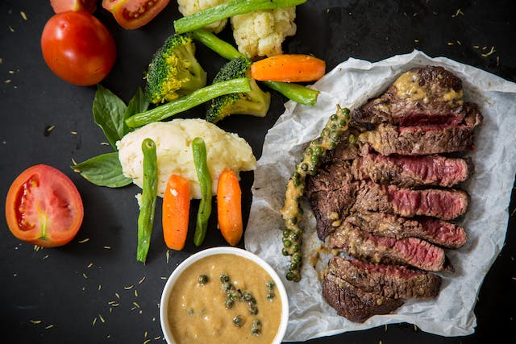

Weight training is essential for causing muscular hypertrophy which is the increase in muscle mass.
Train intensely and consistently. Aim to progressivle overload each workout, meaning that you are doing
more each session.

Proper nutrition is extremely important when bulking. It's necessary that you fuel your body
with the adequate amounts of food in order to be in a caloric surplus. Addtionally, it's crucial to consume enough
protein to support muscle protein synthesis.
Recovery is significant factor for gaining muscle mass as it is the process where muscle
building occurs. Ensure that you are getting proper amounnts of sleep in order to allow your
body to repair the microtrauma that occurs from physical exercise.
Supplements, although not required, can be very beneficial in the process of bulking. They allow
you to easily consume important nutrients that you may be lacking with your diet. Certain supplements
have been proven to assist in the process of gaining muscle such as creatine.